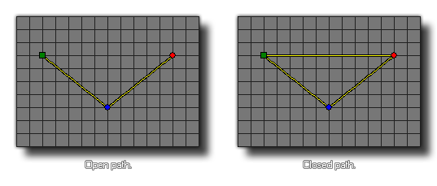

path_set_closed(index, closed);
| Argument | Description |
|---|---|
| index | The index of the path to change. |
| closed | Whether the path is closed (true) or not (false). |
Returns : N/A
This function can be used to flag a given path as being open (false) or closed (true). A closed path has its start point connected to its end point, forming a loop, and an open path has
a definitive, unconnected start and finish. This function changes the actual path resource, and so will permanently affect how the path is used by all instances in the game from the moment the function is
used until the end of the game.

path_set_closed(path0, true);
This will set the path indexed in the resource "path0" to be a closed path.